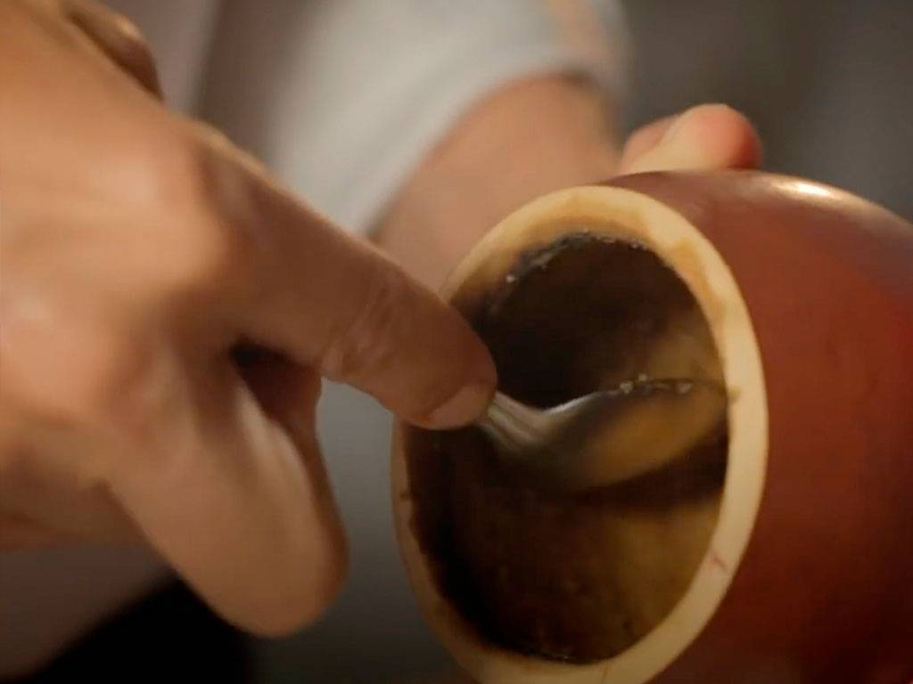

Como curar el mate.

El mate es un símbolo culturar de varios países de Latinoamérica. Cambia la forma en que se lo prepara, algunos lo prefieren dulce, otros amargos, en el Litoral argentino lo toman frío, se lo llama Tereré, la mayoría lo toma caliente. Lo que es seguro es que en la mayoría de las casas hay un mate.
Método para curar el mateProcedimiento básico:Se lava muy bien el interior del mate nuevo con agua caliente, quitándose las cutículas adheridas a las paredes. Una vez escurrido se llena con una cebadura ya usada, luego se le agrega un poco de agua tibia para que la yerba no se seque muy rápidamente.Al día siguiente se vacía y vuelve a repetirse la operación, aunque esta vez sin lavar la calabaza. A partir del día siguiente, el mate ya está absolutamente curado y puede comenzar a utilizarse.
Como curar el mate dulce.

Paso 1. Lavar por dentro el recipiente de madera o de calabaza. Este primer paso se hace con agua caliente, preferentemente hervida, y sirve para desinfectar y eliminar bacterias, polvo y fibras.
Paso 2. Echarle azúcar (no edulcorante sintético). Dos cucharaditas son suficientes, pero depende del tamaño del mate, si es necesario, agregar más. Tapar con la mano la entrada del mate y agitarlo para que el azúcar se pegue a las paredes.
Paso 3. Dejar secar con el azúcar. Esperar unas horas hasta que el azúcar se haya secado y haya dejado una capa que cubra las paredes del mate.
Paso 4. Quemar con carbón. Cuando el mate ya está seco, echar dos brasitas pequeñas de carbón caliente, cubrir la boca del mate con la mano usando un repasador para no quemarse y agitarlo hasta que las brasas se apaguen.
Paso 5. Repetir la operación. Este paso no es obligatorio, pero es bueno repetir los pasos 2, 3 y 4 para asegurar una curación mejor.
Paso 6. Ponerle yerba. Enjuagar el mate con agua caliente, llenarlo con yerba nueva, humedecer la yerba agua tibia para que hinche y dejarlo así toda una noche.
Paso 7. Al día siguiente el mate estará listo para lavar y usarse por primera vez.